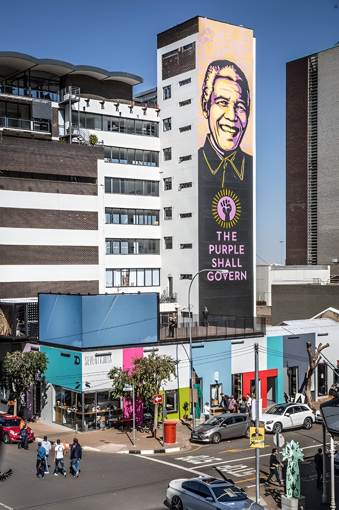
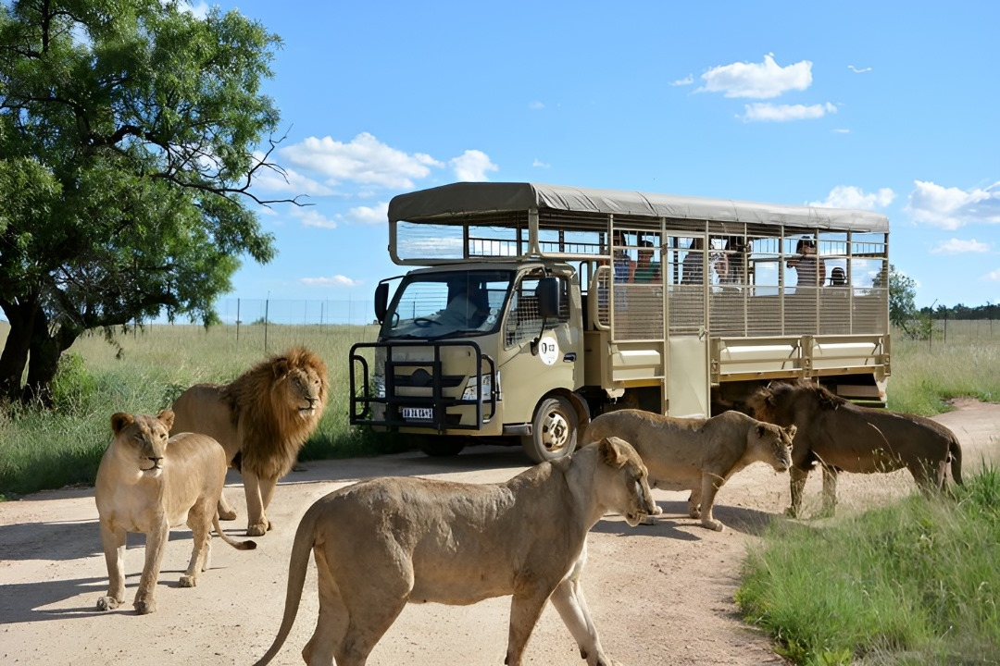
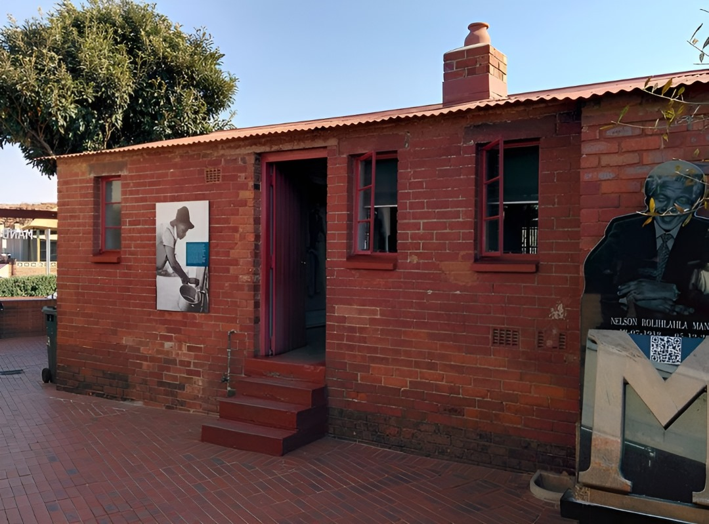
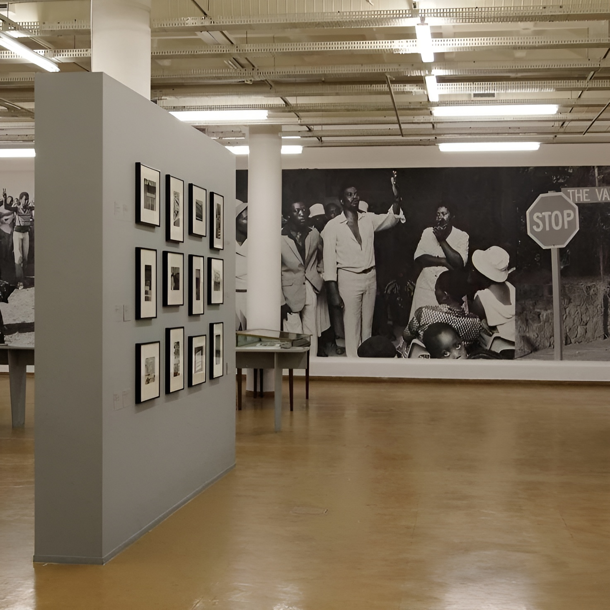

Johannesburg (/dʒoʊˈhænɪsbɜːrɡ/ joh-HAN-iss-burg, États-Unis également /-ˈhɑːn-/ -HAHN-, Afrikaans : [jʊəˈɦanəsbœrχ] ; Zulu et Xhosa : eGoli [ɛˈɡɔːli])
(familièrement connu sous le nom de Jozi, Joburg, Jo' Burg ou « La Cité de l'Or ») est la ville la plus peuplée d'Afrique du Sud avec 4 803 262 habitants et est classée comme une mégapole ;c'est l'une des 100 plus grandes zones urbaines du monde. C'est la capitale provinciale et plus grande ville du Gauteng, qui est la province la plus riche d'Afrique du Sud. Johannesburg est le siège de la Cour constitutionnelle, le plus haut tribunal d'Afrique du Sud. La plupart des grandes entreprises et banques sud-africaines ont leur siège social à Johannesburg. La ville est située dans les collines riches en minéraux du Witwatersrand, l'épicentre du commerce international des minéraux, de l'or et (plus particulièrement) des diamants.

Johannesburg a été créée en 1886, suite à la découverte d'or, sur ce qui était autrefois une ferme. En raison des gisements d'or extrêmement importants découverts le long du Witwatersrand , en dix ans, la population était passée à plus de 100 000 habitants. Ville distincte de la fin des années 1970 jusqu’en 1994, Soweto fait désormais partie de la zone métropolitaine du Grand Johannesburg. Acronyme de « South-Western Townships », Soweto était initialement organisée comme un ensemble de colonies indéfinissables à la périphérie de la ville, peuplées principalement d'ouvriers africains travaillant dans l'industrie minière de l'or. Soweto, bien que finalement incorporée à Johannesburg, avait été explicitement séparée en tant que zone résidentielle réservée aux noirs – aucun blanc n'était autorisé – qui n'étaient pas autorisés à vivre dans d'autres zones « désignées par les blancs » de Johannesburg. Une autre région, Lenasia , est majoritairement peuplée d'Indo-Sud-Africains anglophones (personnes d' origine indienne et sud-asiatique ). Ces zones étaient, au cours des décennies précédentes, désignées comme zones non blanches, conformément à la politique ségrégationniste de l'époque, connue sous le nom d' apartheid . Elle deviendra ensuite l'une des villes hôtes du tournoi officiel de la Coupe du Monde de la FIFA 2010 et accueillera la finale .

Le parc de lions
Le parc de lions de Johannesburg est un lieu de conservation situé en Afrique du Sud, dédié à la préservation des lions sauvages. Il offre aux visiteurs la possibilité de voir ces majestueux félins dans un environnement naturel.

La maison de mandela
La maison de Mandela est le lieu de résidence historique de Nelson Mandela, l'icône de la lutte contre l'apartheid en Afrique du Sud. C'est un site emblématique qui témoigne de son héritage et de son engagement en faveur de la justice et de l'égalité.

Le musee de l appartheid
Le musée de l'apartheid est un lieu majeur qui retrace l'histoire de la ségrégation raciale en Afrique du Sud. Il offre une expérience immersive permettant de comprendre les défis et les triomphes de la lutte contre l'apartheid.
Une petite video de cet endroit magnifique
"Nous sommes une agence de voyages et pour nous notre plus beau voyage c est vous"